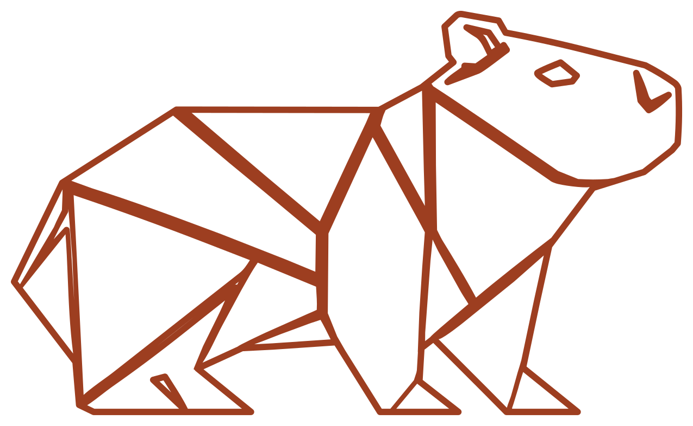

Quem é a ālea
A ālea que também pode ser ligada ao aleatório, nasceu de um acaso. Mas ficou por escolha.
Em um dos momentos mais difíceis da minha vida, sofrendo por quem não devia, quando eu ainda não sabia exatamente para que lado seguir, encontrei, por acaso, em uma madrugada um vídeo sobre impressão 3D. Não estava procurando por aquilo. Mas alguma coisa ali me chamou imediatamente a atenção: a possibilidade de criar, inventar e transformar uma ideia em algo que, até então, simplesmente não existia.
Naquela mesma madrugada, comprei minha primeira impressora 3D.
No dia seguinte, procurando um nome para aquilo que ainda nem sabia exatamente no que se transformaria, encontrei a história de alea iacta est — a célebre expressão associada a Júlio César e à travessia do Rubicão.
Alea, em latim, significa dado. Representa o acaso, o jogo, a sorte, a aleatoriedade que minha cabeça estava naquele momento, aquilo que é lançado e já não pode simplesmente voltar.
Naquele momento percebi que, de certa forma, eu também já havia lançado o meu dado.
Afinal, a impressora estava comprada! Haha’ A decisão estava tomada. E, no fundo, eu sabia que não queria voltar.
Por isso, ālea.
Um acaso que virou escolha.
E acredito que Deus teve muito a ver com isso, colocando um novo caminho diante de mim justamente quando eu mais precisava encontrá-lo.
O acaso no nome. O cuidado em tudo o que faço!
Se a ālea começou por impulso, tudo o que veio depois passou longe de ser feito por impulso.
Sou exigente com detalhes, acabamento, materiais e entrega. Escolho cuidadosamente os filamentos, reviso cada personalização e detalhe, e quando alguma coisa não fica como deveria, eu surto!
E por que uma capivara?

Curiosamente, antes mesmo de existir o nome ālea, uma coisa já estava decidida: minha marca teria uma capivara.
Quando falo minha, é porque sempre tive um sonho de ter uma marca de roupa, e não está muito distante, ainda vou realizar! E vai ter a minha capivara também!
Ela representa muito do lugar de onde vim.
É brasileira, está presente no Cerrado e faz parte de Goiás, minha terra natal! É um animal tranquilo, “amoroso” e dócil. Para mim, ela representa carinho, convivência e amor — e também um pouco de quem eu sou e do que quero que a ālea transmita.
Mas havia ainda outra parte dessa história.
Minha capivara é construída em low poly, uma técnica que representa formas utilizando poucas faces geométricas, normalmente compostas por polígonos e triângulos.
Sempre fui apaixonado por esse estilo.
São pequenas formas que, observadas separadamente, podem parecer desconectadas ou até (ālea)tórias, entenderam o trocadilho né!?
😂😂😂😂😂
Mas, quando se encontram, constroem algo completo.
E talvez não pudesse existir representação melhor para a ālea.
Acaso que vira forma.
Essa linguagem acabou se tornando parte da minha identidade e do jeito como crio as coisas. Antes de desenvolver uma peça, quase sempre me pergunto:
Dá para fazer em low poly!? 😜
Meu comedouro principal, por exemplo, nasceu assim, inteiramente construído em low poly. Nem todo projeto precisa ser low poly, MAAAAAS, se puder, provavelmente será! Haha’
No fim, tudo se conecta.
- O acaso.
- O dado lançado.
- A sorte.
- A aleatoriedade.
- O risco.
- Os triângulos.
- A capivara.
- O Cerrado.
- E a vontade de transformar ideias em coisas que antes não existiam.
Tinha que ser ālea. ❤️